The grading decision
Should I get this comic professionally graded?
Every collector has a book that whispers this question. Mine, this week, is a Black Panther #1 — Kirby, 1977, first issue of the first solo series, and the ballpark on it looks good enough that a slab could be worth real money. But “could” is the whole problem. Professional grading is a bet you place before you know the answer: the fee is roughly $30 a book and up before shipping, the turnaround is weeks, and the premium a slab commands mostly belongs to books that come back in high grades. Send in a book that grades low and you've paid slab prices for bad news. So before I spend the money and the weeks, I run Advanced Grading — far more accurate than the quick cover scan, because it looks at the book the way a grader would.
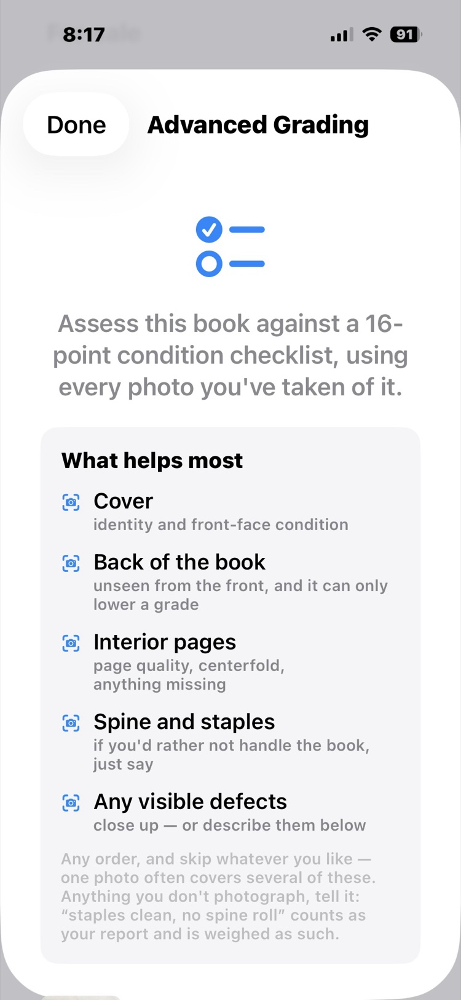
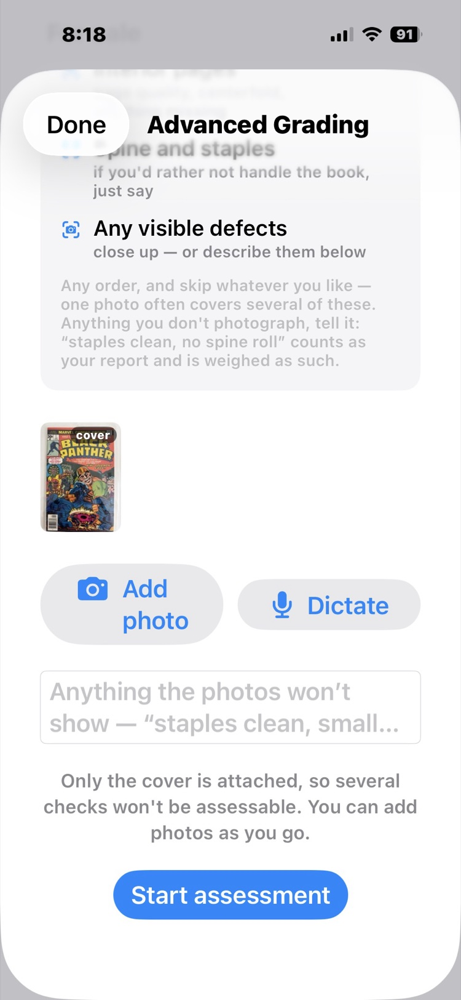
The sheet opens with the instructions, and I follow them. First, the cover. The photo on file was a quick capture from the day I scanned the box — fine for identification, not good enough to grade from. So I retake it: flat light, square on, every corner in frame. One long-press on the new photo and Use as Cover makes it the book's cover photo, right there in the grading sheet.
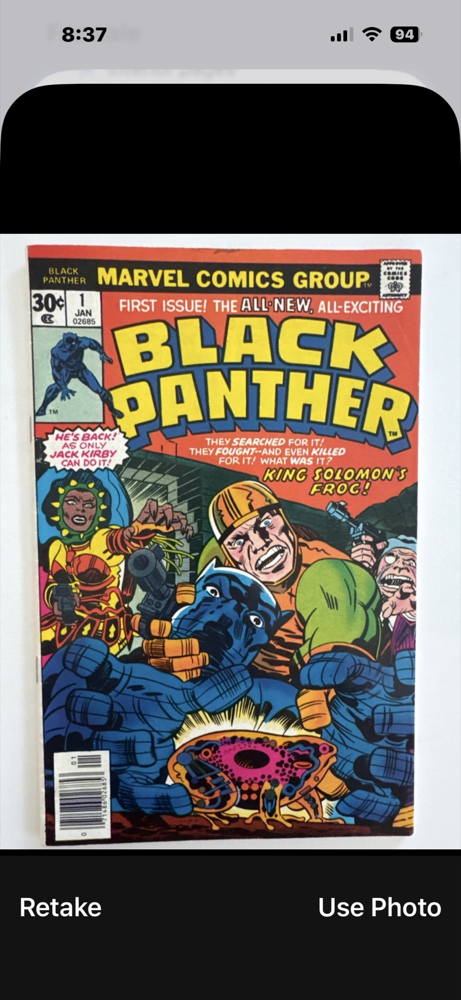
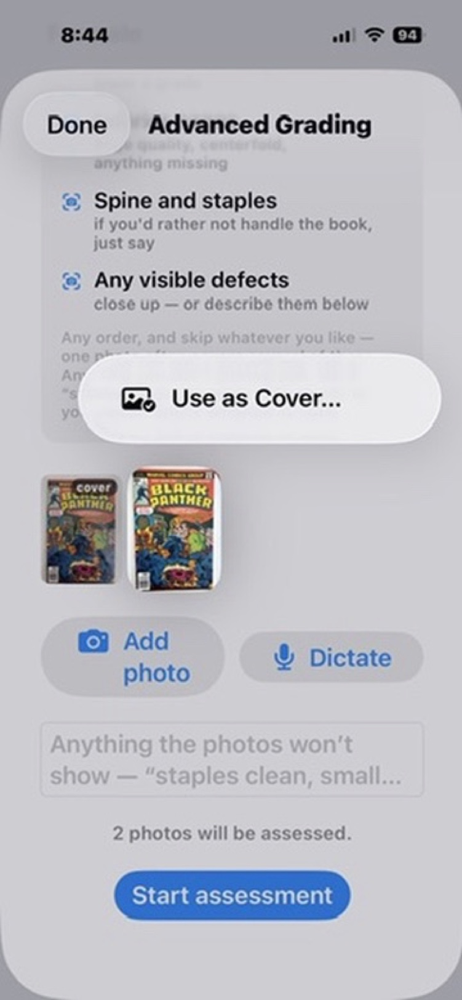
Then the other seven photos, walking the checklist's own list of what helps most: the back cover, the interior pages, the spine and staples, and close-ups of anything my own eyes flag — a crease at the upper right, a rough patch along the back cover's top edge. Eight photos, every necessary angle, maybe three minutes of work with the book on the table.
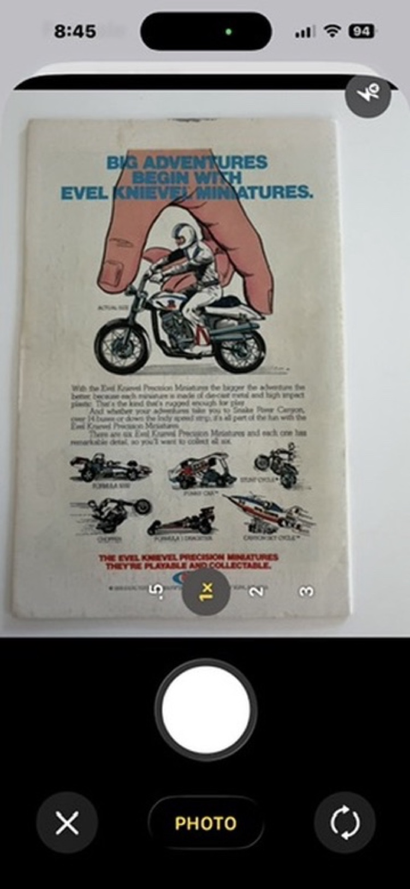
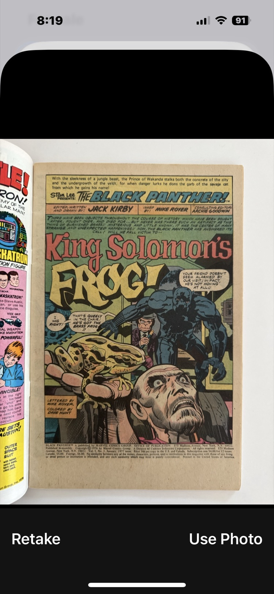
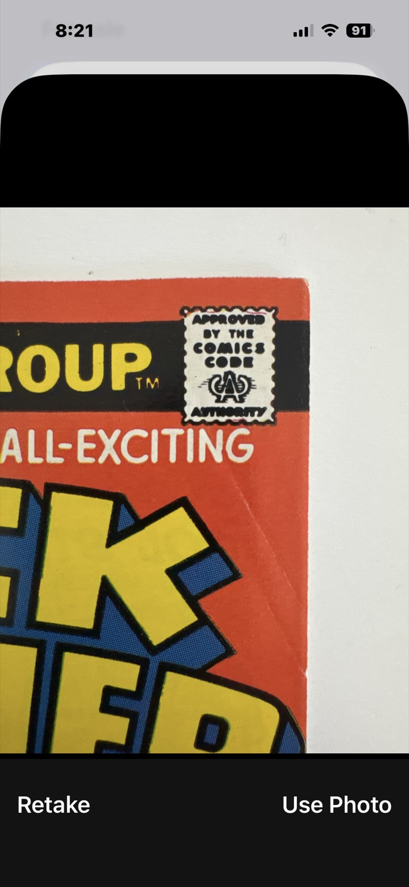


The verdict comes back, and it is not the one I was hoping for: GD–VG, with an Advanced Grading Value of $45. But look at how it says it. The long colour-breaking diagonal crease on the front cover. Widespread handling soil on the back. A shallow patch of paper loss along the back cover's top edge. Age tanning and spotting. It names what it could not see, too — the centerfold's attachment was never photographed, restoration can't be ruled out from pictures — and says plainly that those unknowns cap the upper end and reduce its confidence. A grade that shows its work is one I can argue with. This one, I can't.
Under the verdict, all sixteen checks are laid out one by one, colour-coded: what's clean, what's worn, and what's driving the range. Three colour-breaking spine ticks. All four corners blunted. One long crease, colour-breaking. Staples present and rust-free. No tears, no water damage.
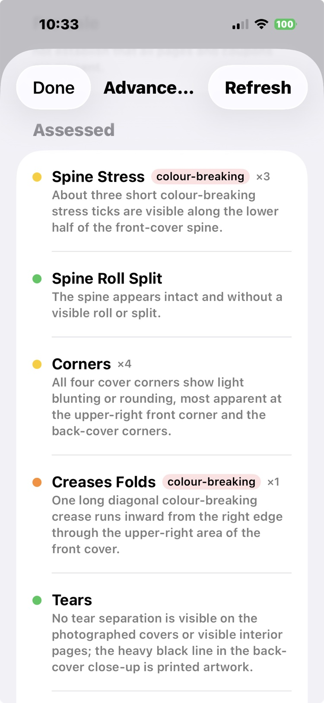
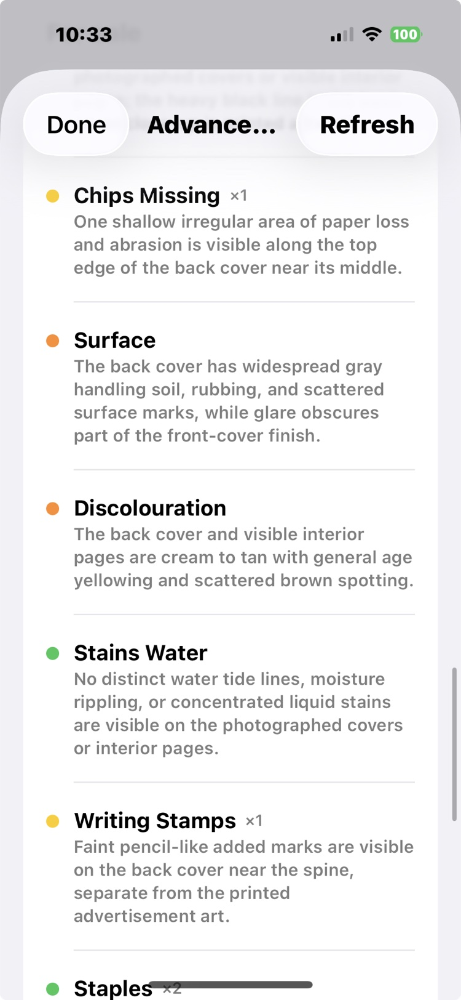
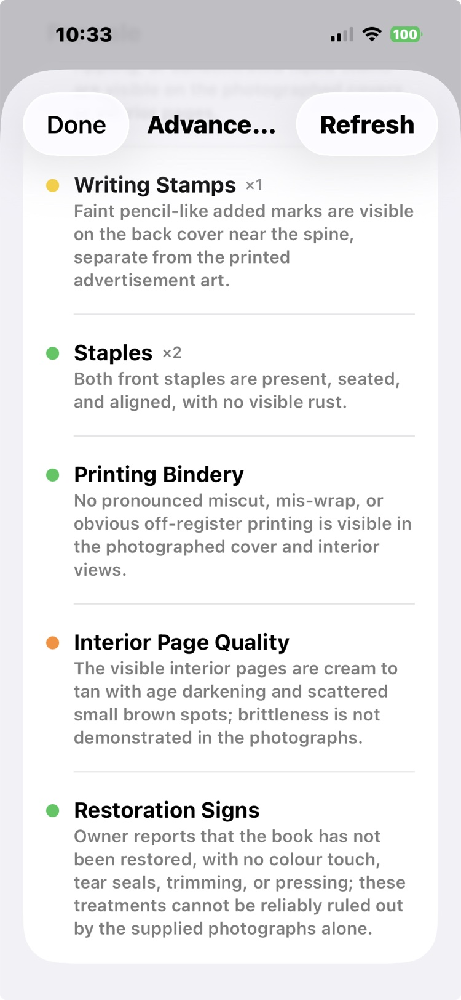
And then the part that settles it: the app annotates my own photos. A yellow ring around the paper loss on the back cover's top edge. Another around the bend in the cover where decades of fingers have gripped it. I don't have to take the AI's word for anything — I can look at my book, through my own photographs, and see exactly what a grader would see.

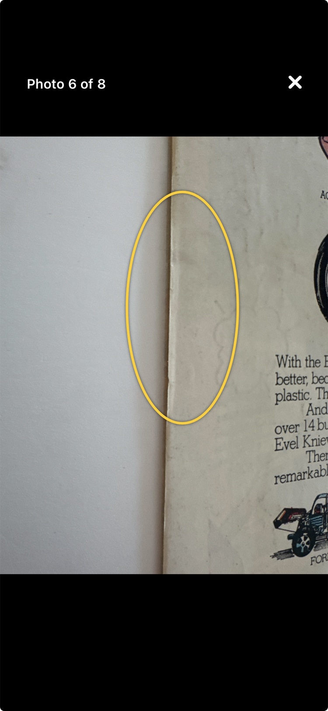
So: should I get this comic professionally graded? No. A GD–VG copy doesn't earn the slab premium — that premium lives at the high end, where a strong grade turns into strong money. For this copy, thirty-plus dollars and six weeks would buy me a very official-looking case around a grade I already know. The book goes back in its bag, honestly recorded at GD–VG with the evidence attached, and the grading fee stays in my pocket for a book that can actually win. That's the point of the exercise: professional grading is sometimes the right call, and now I know when — before the check clears, not after.
Behind it: Advanced Grading walks a 16-point checklist (spine, corners, edges, gloss, pages, staples, and more) across up to eight photographs, and its confidence is tied to what it could actually see: a grade never claims more certainty than the photos support. Anything you don't photograph, you can report in words, and it is weighed as your report. The annotations are drawn on your own photos, so every finding is checkable by eye. It will not replace a professional grading service, and doesn't pretend to; it tells you, for a few credits instead of $30 and six weeks, which books are worth sending to one.